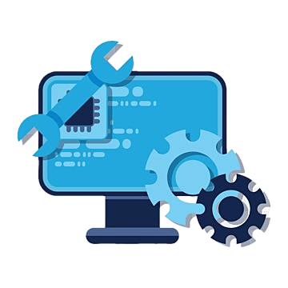

Les Offres Rétro-PC
Nos Services
Diagnostic Complet
Analyse complète de votre machine pour identifier la panne.

Réparation Matérielle
Remplacement de composants (lecteur disquette, disque dur IDE, etc.).
Installation OS
Installation de systèmes d'époque (Windows 98, MS-DOS, etc.).
Tarifs
| Tarifs | ||
|---|---|---|
| Service | Durée | Prix |
| Diagnostic Complet | 1 heure | 30€ |
| Réparation Matérielle | 30 minutes | Sur Devis |
| Installation OS | Variable (~ 40 minutes) | 50€ |